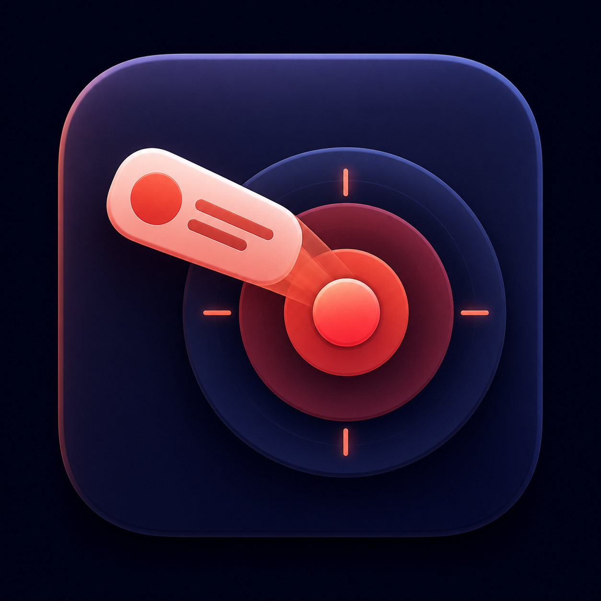
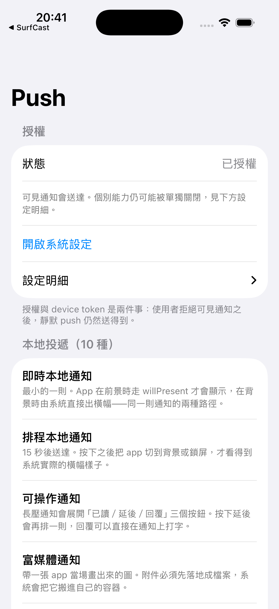

Local patterns
Trigger immediate, scheduled, actionable, rich-media, grouped, and progress notifications.

iOS 17+ · Notification workbench
Exercise local notification timing, actions, rich media, interruption levels, and APNs token handling from one focused iPhone app.
The product mark is a release-draft asset and is not yet integrated into the current build.

Trigger immediate, scheduled, actionable, rich-media, grouped, and progress notifications.
Keep the APNs token local, show only a fingerprint by default, and copy the full token explicitly.
Inspect a bounded local history of notification arrivals without a developer-operated backend.